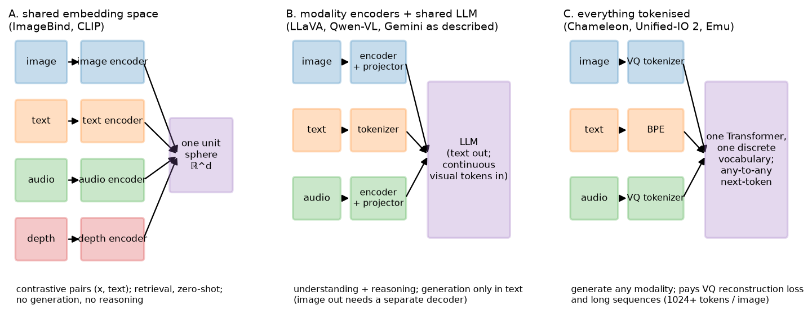

Multimodal foundation models¶
Why this matters at staff level. "Multimodal" in a job description means one of three quite different architectures, and the interview signal is whether you can name which one a system needs and defend it. This chapter is the decision framework: how each modality becomes tokens, the three strategies for combining them, what each can and cannot generate, and where vision-language-action models take the same machinery into robotics. Strong signal is refusing to say "we'd use a multimodal model" and saying instead "shared embedding space, because the product is retrieval and we need precomputable indices".
TL;DR: the interview card¶
- The goal is a model of a joint distribution \(p(x^{\text{text}}, x^{\text{image}}, x^{\text{audio}}, \dots)\), and every practical system factorises it: everything maps into one embedding space, or every modality is encoded and fused inside one LLM, or everything is discretised into one token vocabulary.
- Representations: text into BPE tokens; image into ViT patches (continuous) or VQ codes (discrete); audio into mel spectrogram patches, or neural-codec residual-VQ tokens from EnCodec or SoundStream; video into tubelets; depth and thermal into image-like 2-D maps; point clouds into per-point or voxel and pillar features; actions into discretised bins or continuous vectors from a flow or diffusion head.
- Strategy A, shared embedding space (CLIP, ImageBind): one vector per input, cosine similarity is the interface. Retrieval, zero-shot, cross-modal search. No generation, no reasoning, no composition.
- Strategy B, modality encoders plus a shared LLM (LLaVA, Qwen-VL, and Gemini as publicly described): each modality gets an encoder and a projector, the LLM reasons over mixed tokens and emits text. Almost all production understanding lives here.
- Strategy C, everything tokenised (Chameleon, Unified-IO 2, Emu): one discrete vocabulary, one Transformer, next-token prediction over interleaved modalities. The only strategy that generates non-text modalities natively, paying VQ reconstruction loss and long sequences.
- ImageBind's observation: you do not need \(\binom{M}{2}\) paired datasets. Bind every modality to images and the rest align transitively, because image-paired data exists for everything.
- VLA models (RT-2, OpenVLA, \(\pi_0\)) are strategy B or C with actions as the output modality. RT-2 and OpenVLA discretise actions into text-like tokens, and \(\pi_0\) attaches a flow-matching action expert for high-frequency continuous control.
- Decision rule: generate it, use C. Reason about it, use B. Search it, use A.
1. Intuition first¶
Take four inputs: a photo of a dog, the caption "a dog on grass", a 2-second bark, and a depth map of the same scene. What "one model" means depends on which of three shapes you pick.
Version A. Four encoders, four vectors, one sphere. You can ask which audio clip matches this photo by a dot product. You cannot ask how many dogs there are, because there is no mechanism that composes, counts or explains. A single vector per input is all there is.
Version B. Four encoders, four projectors, one LLM. The dog photo becomes 576 tokens, the bark becomes 50, the depth map becomes 576, and all of them sit in the LLM's context next to the text. Now anything answerable in words is answerable. You cannot get a picture back, because the output head is a text vocabulary.
Version C. Every input is discretised into codes from one vocabulary: text BPE ids 32,000 to 32,999, image VQ codes 33,000 to 41,191, audio codes 41,192 to 42,215. A single Transformer predicts the next code. Ask for a picture and it emits image codes that a VQ decoder renders. The price is that the VQ tokeniser throws information away before the model sees it, and an image costs 1,024 or more tokens of sequence.

Look at where the arrows converge in each panel. In A they converge on a sphere and stop. In B they converge on an LLM whose output is text. In C they converge on a vocabulary, and the output can be any modality because the output space is the same as the input space. That single structural difference explains almost every capability difference between these systems.
2. The math¶
2.1 What a modality is, operationally¶
A modality is anything you can turn into a sequence of vectors. The engineering question is always the same three-part one: what is the unit, how many units per second or per image, and is the unit continuous or discrete?
| Modality | Unit | Typical rate | Continuous form | Discrete form |
|---|---|---|---|---|
| Text | BPE token | about 1.3 tokens per word | embedding lookup | the vocabulary itself |
| Image | patch or tubelet | \(HW/P^2\) per image | ViT features | VQ-VAE or VQGAN codes, e.g. \(32\times32 = 1024\) |
| Video | tubelet | \((T/t)(HW/P^2)\) | ViT features | per-frame VQ, or 3-D VQ |
| Audio (understanding) | spectrogram patch | about 50/s at 20 ms hop | mel patches into ViT or Conformer | |
| Audio (generation) | codec frame | 50 to 75 Hz times \(Q\) codebooks | encoder latents | residual-VQ codes (EnCodec, SoundStream) |
| Depth, thermal | pixel patch | as image | image-like encoder | as image |
| Point cloud | point, voxel or pillar | \(10^4\) to \(10^5\) points | PointNet, sparse conv, pillar features | voxel indices |
| IMU, sensor stream | window | 100 to 1000 Hz | 1-D conv or Transformer over windows | binned |
| Action (robot) | timestep | 5 to 50 Hz | continuous vector \(a_t \in \R^{d_a}\) | 256 bins per dimension |
Two consequences for system design. Rates differ by orders of magnitude, so naive concatenation gives one modality all the tokens, and every real system compresses the high-rate ones, as section 2.5 describes. And discretisation is a choice with a loss attached: a VQ tokeniser has a reconstruction error that upper-bounds the fidelity of anything generated through it, no matter how good the Transformer is.
2.2 Audio, in the detail an interviewer will push on¶
Audio is the modality most often hand-waved, so state it precisely. For understanding, the standard representation is a log-mel spectrogram: 80 mel bins, 25 ms window, 10 ms hop, so 100 frames per second. Whisper stacks two conv layers with stride 2 to reach 50 frames per second and feeds a Transformer encoder, so a 30-second clip is 1,500 tokens, comparable to three images.
For generation, spectrograms are awkward because phase has to be reconstructed, so neural audio codecs are used instead. An encoder maps the waveform to roughly 50 to 75 latent frames per second, and residual vector quantisation quantises each frame with \(Q\) successive codebooks, where codebook \(q\) quantises the residual left by codebooks \(1..q-1\). One second of audio is \(75 \times Q\) tokens, so 600 tokens per second at \(Q = 8\). Audio LLMs therefore use either a coarse-to-fine hierarchy, as in AudioLM's semantic, coarse acoustic and fine acoustic stages, or parallel prediction of the \(Q\) codebooks per frame, as in MusicGen's delay pattern.
Audio generation is a sequence-length problem before it is a modelling problem, and the standard fixes reduce the token rate exactly as section 2.5 does for vision.
2.3 Strategy A: one shared embedding space¶
Train encoders \(f_m\) for modalities \(m = 1..M\) so that paired inputs land nearby on the unit sphere. The naive version needs paired data for every pair, \(\binom{M}{2}\) datasets, most of which do not exist: there is no depth-map-to-audio corpus. ImageBind's observation is that alignment is transitive enough. Train each \(f_m\) contrastively against a frozen image encoder using \((image, m)\) pairs, which do exist for every modality, since video frames come with audio, RGB-D sensors give image and depth, and IMU comes with egocentric video. With \(L\) the InfoNCE loss of chapter 3,
and because the image space is already aligned with text, every modality becomes aligned with text and, empirically, with every other modality without ever seeing those pairs. That emergent cross-modal retrieval is the paper's headline claim.
The limits come from the same structure. The binding modality is a bottleneck: two modalities can only be as aligned as their respective alignments to images. And a single vector per input cannot represent composition, which is chapter 3's bag-of-words failure inherited by every modality.
2.4 Strategy B: modality encoders into one LLM¶
This is chapter 4 generalised. For each modality, an encoder and a projector produce tokens in the LLM's embedding space, then one causal LLM runs over the interleaved sequence. Audio adds a Whisper-style encoder and a projector, video adds a video encoder with temporal compression, point clouds add a 3-D encoder.
This dominates production understanding because the LLM is the expensive, capable, already-trained part, and every modality is a comparatively cheap adapter onto it. You inherit instruction-following, reasoning, tool use and safety training for free, and you can add a modality without touching the others.
It cannot generate images, because the output head is a softmax over a text vocabulary. Systems that appear to do both, a chat model that returns pictures, usually call a separate image generator conditioned on text or on an embedding. That is a product composition rather than a joint model, and it shows: the generator does not see the conversation's full context, and the LLM cannot inspect what it produced unless the image is fed back through the vision encoder.
2.5 Strategy C: one token stream¶
Quantise every modality into one vocabulary and train a single Transformer with the next-token objective of Part VI:
Generation becomes symmetric. The model emits image codes as easily as words, and interleaved outputs, text then a picture then more text, are just sequences. This is early fusion: modalities mix from layer 1, in every layer, instead of being encoded separately and concatenated.
Three costs, all reported in the Chameleon paper and worth knowing:
- Tokeniser loss. A VQGAN at \(32\times32\) codes per \(512^2\) image discards high-frequency detail permanently. Chameleon's authors note their tokeniser struggles with text inside images, which caps OCR quality regardless of model scale.
- Sequence length. At 1,024 tokens per image an interleaved document is long, and training compute goes up accordingly.
- Training instability. Mixing modalities with different token statistics in one softmax destabilises training at scale. Chameleon's fixes were query-key normalisation and a careful placement of layer norms, the same QK-norm intervention as ViT-22B in chapter 1, for the same reason of logit growth.
2.6 The decision table¶
| Dimension | A: shared embedding | B: encoders plus LLM | C: one token stream |
|---|---|---|---|
| Examples | CLIP, ALIGN, SigLIP, ImageBind | LLaVA, Qwen2-VL, Flamingo, Gemini (as described) | Chameleon, Unified-IO 2, Emu |
| Output | a vector | text, including text-encoded boxes and actions | any tokenised modality |
| Reasoning and composition | none | strong, the LLM's | strong |
| Generation of images or audio | no | no, needs an external generator | yes, natively |
| Cost per image at inference | one encoder pass | encoder plus \(N_v\) LLM tokens | about 1,024 LLM tokens |
| Precomputable and indexable | yes, this is its superpower | no | no |
| Add a new modality | train one encoder against images | train one encoder plus projector | retrain the tokeniser and the model |
| Fidelity ceiling | not applicable | the encoder's | the VQ tokeniser's |
| Biggest risk | no composition | cannot generate | tokeniser loss, instability, length |
Decision rule. If the product must generate a non-text modality, use C, or B plus an external generator when the modalities do not need to reason about each other. If it needs reasoning, instructions or explanation, use B. If it is search, ranking, dedup or zero-shot tagging at scale, use A, because only A gives you an index you can build offline and query in microseconds. Most real systems are A for retrieval and B for understanding, arranged as a funnel: embed everything, retrieve with A, then explain or decide with B on the shortlist. That is the architecture of visual search, moderation triage and multimodal RAG. See visual search, content moderation and retrieval and RAG.
2.7 Native multimodality and any-to-any¶
"Natively multimodal" means trained on multiple modalities from the start of pretraining instead of adapted afterwards. The public argument for it, made in Google's Gemini report and in Chameleon, is that late-fused models learn cross-modal structure only in the adapter and only from the comparatively tiny alignment corpus, whereas early fusion lets every layer learn it from the full pretraining budget. The claimed consequences are better interleaved reasoning and better transfer to modalities with little instruction data. The counter-argument is economic: adapting a strong text LLM is far cheaper than pretraining a multimodal one, and open benchmarks are still dominated by adapted models. Both can hold at once, with early fusion better at the frontier and worse per dollar.
2.8 Vision-language-action models¶
Robotics is where multimodal models stop being about perception. A VLA maps images plus a language instruction to actions. Three designs, in increasing sophistication.
RT-2, actions as text. Take a VLM, discretise each action dimension into 256 bins, and represent an action as a string of bin indices. The action becomes another output sequence, so the entire VLM including its web-scale knowledge transfers directly. The paper's striking result is emergent semantic generalisation: instructions referring to objects or concepts never in the robot data, such as "pick up the extinct animal", work because the VLM knows what those words mean. The constraint is rate, since a large VLM produces actions at a few Hz, which limits it to relatively slow manipulation.
OpenVLA, the open reproduction. A 7B model on a SigLIP plus DINOv2 dual vision backbone with a Llama-2 LLM, trained on about 970k real robot episodes from the Open X-Embodiment collection, with the same discretised-action-as-token scheme, released with weights and fine-tuning recipes including LoRA and quantised serving. In an interview it is the concrete, inspectable instance of the RT-2 idea.
\(\pi_0\), a flow-matching action expert. Discretised autoregressive actions cap both frequency and smoothness. \(\pi_0\) keeps a pretrained VLM backbone and attaches a separate action expert that produces continuous action chunks via flow matching (see flow matching), reaching up to 50 Hz control for dexterous tasks such as laundry folding, trained on a large cross-embodiment mixture. The design lesson is to use the VLM for semantics and a continuous generative head for control, instead of forcing control through a text vocabulary.
An action is a modality like any other, and the three strategies map onto robotics unchanged. A gives you visual goal retrieval, B gives you a language-conditioned policy that emits discrete actions, and C-like continuous heads give you high-frequency control.
3. Implementation¶
This chapter introduces no new module, because its architectures are compositions of code you already have. Two short compositions make the strategies concrete.
3.1 Binding a third modality to a frozen image-text space (strategy A)¶
ImageBind in fifteen lines, using MiniCLIP's pieces from
chapter 3. The image tower is frozen, so only the new modality's
encoder moves and the existing image-text alignment is preserved exactly.
from mlbook.multimodal.clip import MiniCLIP, clip_loss
def bind_modality(clip_model: MiniCLIP, new_encoder: nn.Module, proj: nn.Module,
images: torch.Tensor, paired: torch.Tensor,
opt: torch.optim.Optimizer) -> float:
"""One step of aligning a new modality to a FROZEN image space."""
with torch.no_grad():
v = clip_model.encode_image(images) # (B, d_e) frozen anchor
m = nn.functional.normalize(proj(new_encoder(paired)), dim=-1) # (B, d_e) trainable
scale = clip_model.logit_scale.clamp(max=clip_model.max_logit_scale).exp() # scalar
logits = scale * m @ v.T # (B, B) new-modality -> image
loss = clip_loss(logits) # symmetric InfoNCE
opt.zero_grad(); loss.backward(); opt.step()
return float(loss)
Only new_encoder and proj receive gradients, since clip_model.parameters() are excluded
from opt. After training, m can be compared with text embeddings the new encoder never
saw, which is the emergent alignment of section 2.3. The same clip_loss that trained
image-text now trains audio-image, depth-image and IMU-image, one modality at a time.
3.2 Assembling one token stream (strategy C)¶
Strategy C is an offsetting problem rather than a modelling one. Each modality's codes occupy a disjoint range of one vocabulary, and boundary tokens tell the model which modality is coming.
VOCAB = {"text": (0, 32000), "image": (32002, 40194), "audio": (40194, 41218)}
BOI, EOI = 32000, 32001 # begin/end of image, in the text range
def interleave(text_ids: torch.Tensor, image_codes: torch.Tensor) -> torch.Tensor:
"""Text ids (T,) and VQ image codes (N_img,) -> one sequence (T + N_img + 2,).
Image codes are shifted into their own range so a single softmax covers everything.
"""
img = image_codes + VOCAB["image"][0] # (N_img,) shifted into the image range
boi = torch.tensor([BOI]); eoi = torch.tensor([EOI]) # (1,), (1,)
return torch.cat([text_ids, boi, img, eoi], dim=0) # (T + N_img + 2,)
The model is then an ordinary causal LM, and TinyCausalLM from vlm.py works unchanged if
you widen its vocabulary. Two production details this sketch omits and an interviewer may
probe. Generation has to be constrained: after BOI you sample exactly \(N_{img}\) tokens from
the image range and then force EOI, or the model can emit a half-image. And the image codes
are usually predicted with their own output head or normalisation, because their token
statistics differ sharply from text's, which is the instability of section 2.5.
3.3 Actions as tokens (VLA)¶
def discretise_action(a: torch.Tensor, low: torch.Tensor, high: torch.Tensor,
n_bins: int = 256) -> torch.Tensor:
"""Continuous action (B, d_a) -> integer bins (B, d_a), uniform in [low, high] per dimension."""
scaled = (a - low) / (high - low) # (B, d_a) in [0, 1]
return (scaled.clamp(0, 1) * (n_bins - 1)).round().long() # (B, d_a) in [0, 255]
def action_tokens(bins: torch.Tensor, action_vocab_start: int) -> torch.Tensor:
"""(B, d_a) bins -> (B, d_a) token ids in the action range, emitted as a text-like sequence."""
return bins + action_vocab_start # (B, d_a)
RT-2 and OpenVLA overload rarely used tokens of the text vocabulary rather than extending it, which avoids resizing the embedding matrix of a pretrained LLM. The inverse map at inference, from bin centre back to a continuous action, is where quantisation error enters. With 256 bins over a \(\pm0.1\) m range, positional resolution is 0.8 mm, fine for grasping and not for insertion, which is the practical argument for \(\pi_0\)'s continuous head.
How you'd test it. The tested code this chapter depends on is
tests/test_multimodal_clip.py for the contrastive loss and alignment that strategy A is
built from, and tests/test_multimodal_vlm.py with
tests/test_multimodal_projectors.py for strategy B's splice and projectors. For the snippets
above, the checks that matter are: bind_modality leaves clip_model's parameters
bit-identical, asserted on a cloned state_dict; interleave produces ids whose image segment
lies entirely within VOCAB["image"]; discretise_action round-trips to within one bin width.
Retype by hand¶
This chapter's architectures reuse symbols you have already retyped, so what is worth reproducing from memory here is the composition rather than new primitives.
| Symbol | File | Retype? | Target time |
|---|---|---|---|
clip_loss (the binding objective of strategy A) |
src/mlbook/multimodal/clip.py |
Already retyped in chapter 3, so re-derive instead | 5 min |
bind_modality (freeze the anchor, train the new encoder) |
this chapter, section 3.1 | Yes, from memory, including the no_grad on the anchor |
10 min |
interleave and the vocabulary-offset scheme |
this chapter, section 3.2 | Yes | 10 min |
discretise_action, action_tokens |
this chapter, section 3.3 | Yes | 5 min |
merge_visual_tokens (strategy B's mechanism) |
src/mlbook/multimodal/vlm.py |
Already retyped in chapter 4 | |
PerceiverResampler (compressing a high-rate modality before the LLM) |
src/mlbook/multimodal/projectors.py |
Already retyped in chapter 4 |
The whiteboard exercise that gets tested in interviews for this chapter is the decision table of section 2.6. Reproduce its rows from memory and defend one choice per row, in about 10 minutes.
Checks for the underlying code: python -m pytest tests/test_multimodal_clip.py -q and
python -m pytest tests/test_multimodal_vlm.py -q.
4. Systems view: cost, failure modes, trade-offs¶
Token budgets across modalities. For a 32k-token context, the practical budget:
| Content | Tokens | Share of 32k |
|---|---|---|
| One 336-px image (LLaVA-1.5) | 576 | 1.8% |
| One image, AnyRes 5 tiles | 2,880 | 9% |
| One VQ image (Chameleon-style) | 1,024 | 3.2% |
| 30 s of audio (Whisper rate) | 1,500 | 4.7% |
| 1 s of generated audio (EnCodec, \(Q=8\)) | 600 | 1.9% |
| 1 minute of video at 1 fps, 256 tokens per frame | 15,360 | 48% |
Video is the modality that breaks context budgets, which is chapter 6's subject. Audio generation is second. The lever in every case is to compress before the LLM with a resampler, pooling or a hierarchy, rather than inside it.
Failure modes.
- Modality imbalance in training. The modality with the most tokens dominates the loss, so models trained on a naive mixture get very good at the majority modality and ignore the others. Re-weight the loss per modality, or sample batches to a target token ratio.
- Modality collapse and shortcut learning. If one modality predicts the target almost as well alone, such as audio in a video-classification task or text in a VQA dataset with strong priors, the model learns to ignore the others. Diagnose by ablating inputs at eval: if accuracy barely drops when you blank the image, the model is not using it.
- Transitive alignment degradation in strategy A. Audio-to-text similarity is mediated by images, so it is weaker than either audio-to-image or image-to-text. Measure the emergent pairs rather than assuming they match the trained ones.
- Tokeniser ceiling in strategy C. Generated images inherit the VQ decoder's artifacts. Encode and decode ground-truth images through the tokeniser alone, and that reconstruction is the model's upper bound.
- The safety surface grows per modality. Each new input modality is a new injection channel, such as text rendered inside an image or instructions spoken in audio, and each new output modality is a new harm channel. The GPT-4V system card is the canonical enumeration, documenting mitigations around person identification, captcha solving, and jailbreaks delivered as images. See safety and failure modes.
When to use what. The table of section 2.6 is the decision artifact. Here is the serving-side complement.
| Requirement | Implication |
|---|---|
| Sub-10 ms retrieval over \(10^9\) items | Strategy A only, with embeddings precomputed and an ANN index (Part XIII) |
| Explanation or instruction-following | Strategy B, with prefill budgeted for the visual tokens |
| Generate an image conditioned on a conversation | Strategy C, or B plus an external generator given an explicit context summary |
| Add a modality in one quarter with a small team | Strategy A or B. C requires retraining everything |
| On-robot control at 30 Hz or above | A VLA with a continuous action head. A token-by-token LLM cannot hit the rate |
5. In production¶
Meta (FAIR): ImageBind binds six modalities through images alone
ImageBind trains image-paired encoders for text, audio, depth, thermal and IMU against a frozen CLIP-style image space, and reports emergent zero-shot capability on pairs never seen in training, such as audio-to-depth retrieval and audio-driven detection, because alignment through images is transitive. The explicitly rejected alternative is collecting \(\binom{M}{2}\) paired datasets, most of which do not exist naturally. The cost is that every cross-modal capability is bounded by each modality's alignment to images. Source: ImageBind: One Embedding Space To Bind Them All, Girdhar et al., CVPR 2023 (arXiv:2305.05665).
Meta: Chameleon as an early-fusion, mixed-modal token model
Chameleon tokenises images into 1,024 discrete codes with a learned image tokeniser and trains a single Transformer over interleaved image and text tokens from the start, so it can generate both. The paper documents the price of early fusion at scale: training instability from mixing modalities in one softmax, resolved with query-key normalisation and a revised norm placement, and a tokeniser that limits text-heavy images. What it buys is interleaved generation, which two-tower and encoder-plus-LLM designs cannot do. Source: Chameleon: Mixed-Modal Early-Fusion Foundation Models, Chameleon Team, 2024 (arXiv:2405.09818). Compare Unified-IO 2, Lu et al., CVPR 2024 (arXiv:2312.17172), which tokenises images, text, audio and action into one space.
Google: Gemini as a natively multimodal model
Google's Gemini technical report describes models trained from the start on interleaved text, images, audio and video rather than adapting a text model, with audio ingested natively as 16 kHz USM features instead of through a speech-to-text front end, so that prosody and non-speech audio survive. The stated argument for native training is cross-modal reasoning without an adapter bottleneck, and the rejected alternative is the adapter approach that dominates open models. Treat the capability claims as the vendor's own evaluation. Source: Gemini: A Family of Highly Capable Multimodal Models, Gemini Team, Google, 2023 (arXiv:2312.11805).
OpenAI: GPT-4V and the safety surface of a new input modality
The GPT-4V system card documents what changes when images become an input to a deployed assistant: new refusal categories such as identifying real people, solving captchas and medical diagnosis from images; new jailbreak vectors including instructions written inside an image; and the evaluation process used before release. It is the best public enumeration of multimodal deployment risk and is worth citing directly in a system design round. Source: GPT-4V(ision) System Card, OpenAI, September 2023.
Google DeepMind: RT-2, web-scale VLMs as robot policies
RT-2 co-fine-tunes a VLM on web vision-language data and robot trajectories, with actions represented as discretised text tokens, and reports emergent semantic generalisation to objects, categories and instructions absent from the robot data, because the web knowledge transfers when the action is emitted by the same decoder as text. The accepted trade-off is inference rate, since a large VLM emits actions at a few Hz. Source: RT-2: Vision-Language-Action Models Transfer Web Knowledge to Robotic Control, Brohan et al., CoRL 2023 (arXiv:2307.15818).
Stanford, Berkeley and Physical Intelligence: OpenVLA and pi-zero
OpenVLA is a 7B open VLA with SigLIP and DINOv2 vision and a Llama-2 LLM, trained on about 970k episodes from Open X-Embodiment and released with weights, LoRA fine-tuning and quantised serving, the reproducible instance of RT-2's recipe. \(\pi_0\) takes the opposite view of the action head: it attaches a flow-matching action expert to a pretrained VLM to emit continuous action chunks at up to 50 Hz, enabling dexterous tasks such as laundry folding and box assembly that discretised low-rate actions cannot express. Sources: OpenVLA: An Open-Source Vision-Language-Action Model, Kim et al., CoRL 2024 (arXiv:2406.09246); π₀: A Vision-Language-Action Flow Model for General Robot Control, Black et al., Physical Intelligence, 2024 (arXiv:2410.24164); Open X-Embodiment: Robotic Learning Datasets and RT-X Models, Open X-Embodiment Collaboration, ICRA 2024 (arXiv:2310.08864).
6. Interview questions and strong answers¶
A product team says 'we want a multimodal model'. What do you ask?
What must come out. If the output is a ranking or a match, it is a shared embedding space: one vector per item, precomputed, in an ANN index, because nothing else gives you \(10^9\) items at 10 ms. If the output is an answer, an explanation or a decision in words, it is encoders into an LLM. If the output is an image, audio or video, it is a tokenised single stream, or an external generator when the generated artifact does not need to reason about the conversation. Then I ask about scale and latency, because A is the only one that amortises. Staff follow-up: "They want all three." Build the funnel: A for retrieval over the corpus, B for understanding on the shortlist, and a separate generator called by B. Do not try to make one model do retrieval at \(10^9\) scale, because an LLM cannot be an index.
Explain ImageBind's central trick and its limit.
Pairwise alignment of \(M\) modalities naively needs \(\binom{M}{2}\) paired corpora, and most pairs such as depth and audio have no natural data. ImageBind trains each modality's encoder contrastively against a frozen image encoder, using pairs that occur naturally: video gives image and audio, RGB-D gives image and depth, egocentric video gives image and IMU. Because the image space is already aligned with text, everything ends up in one space and cross-modal retrieval emerges for untrained pairs. The limit is that image is a bottleneck: audio-to-text is only as good as audio-to-image composed with image-to-text, and it measures worse than either. It also inherits the lack of composition and the single vector per input. Staff follow-up: "How would you improve audio-to-text specifically?" Fine-tune with whatever direct audio-caption data exists, AudioCaps-style, as a second stage, keeping the image alignment as a regulariser so the shared space does not drift.
Why can't LLaVA generate an image, and what would you change?
Its output head is a softmax over a text vocabulary, and there is no token that means pixel. The changes, in increasing order of cost: call an external generator with a text prompt, which is cheap but the generator does not see the conversation; add an image-generation head that predicts a continuous embedding consumed by a diffusion decoder; or tokenise images with a VQ model, extend the vocabulary, and train on interleaved data, which gives any-to-any generation but means retraining the model and capping fidelity at the tokeniser's reconstruction. Staff follow-up: "What does the third option cost you on understanding tasks?" VQ codes are lossier than continuous ViT features, particularly for text inside images, so OCR and fine-grained recognition regress. Some models keep continuous features for input and discrete codes for output, which is the pragmatic middle.
How do you tokenise audio, and why is it different for understanding and generation?
For understanding: a log-mel spectrogram with 80 bins, a 25 ms window and a 10 ms hop, with conv stride to about 50 frames per second, then a Transformer encoder, so 30 seconds is about 1,500 tokens. Phase does not matter because nothing is reconstructed. For generation you have to reconstruct a waveform, so a neural codec is used: an encoder at 50 to 75 Hz with residual vector quantisation, where codebook \(q\) quantises the residual of codebooks \(1..q-1\). That gives \(75Q\) tokens per second, 600 at \(Q=8\), so generation is a sequence-length problem handled by hierarchy, semantic then acoustic, or by parallel prediction across codebooks. Staff follow-up: "How would you put speech into an existing VLM cheaply?" A Whisper encoder plus a projector, exactly the chapter-4 pattern. Train the projector on audio with transcripts or instructions with the LLM frozen, then unfreeze. Do not transcribe to text first if you care about prosody, speaker or non-speech audio.
What is a VLA, and why did RT-2 generalise better than a policy trained only on robot data?
A vision-language-action model maps images plus an instruction to actions. RT-2's construction is a VLM whose action outputs are discretised into token strings, co-fine-tuned on web vision-language data and robot trajectories. It generalises because the same decoder that emits actions already knows what words mean from web-scale pretraining, so an instruction naming an object never seen in the robot data still grounds. A policy trained only on robot data has no such prior and can only interpolate within its demonstration distribution. Staff follow-up: "Why did pi-zero move away from discretised actions?" Rate and smoothness. Autoregressive token-by-token emission at 256 bins per dimension caps control frequency at a few Hz and quantises fine motion. A flow-matching action expert emits a continuous chunk of future actions in one shot at up to 50 Hz, which is what dexterous manipulation needs.
You are adding image input to a deployed text assistant. What is on your risk list?
A new injection channel, since instructions rendered inside an image bypass text-level filters, so prompt-injection defence has to run on what the model reads rather than on the text field alone. New capability harms: person identification, reading documents the user should not have, captcha solving, medical or legal advice from photographs. New evaluation gaps, since existing refusal evals are text-only. A new privacy surface, since images carry metadata and incidental third parties. The GPT-4V system card enumerates these with the mitigations OpenAI shipped, and I would build the eval set before the feature.
7. Exercises¶
-
★ Compute the token cost of a 5-minute video at 1 fps with 256 tokens per frame, and say what has to change to fit a 32k context.
Solution
\(300 \times 256 = 76{,}800\) tokens, 2.4 times the context. Options: drop to 0.2 fps for 15,360; pool \(2\times2\) spatially for 19,200 at 1 fps; use a resampler at 32 tokens per frame for 9,600; or select keyframes. Most production video models combine two of these. See chapter 6.
-
★ For each system, name the strategy: CLIP, LLaVA, Chameleon, ImageBind, Flamingo, RT-2, Unified-IO 2.
Solution
A: CLIP, ImageBind. B: LLaVA, Flamingo (encoders plus LLM, with cross-attention rather than splicing), RT-2 (B with actions discretised into the text vocabulary, arguably a hybrid since the output modality is tokenised). C: Chameleon, Unified-IO 2.
-
★★ (coding) Implement
bind_modalityfrom section 3.1 with a toy third modality, a 1-D signal whose frequency encodes the same class as the image quadrant, and verify two things: the CLIP model's parameters are unchanged after training, and the new modality retrieves the correct text prompt it never trained against.Solution
Reuse
The retrieval works despite no (signal, text) pair ever being trained, which is ImageBind's emergent alignment on a toy scale._toy_datafromtests/test_multimodal_clip.pyfor images and captions, and buildsignals[k] = sin(2π f_k t) + noise. Encode signals with a small 1-D conv Transformer. After about 100 steps ofbind_modality, computem @ model.encode_text(prompts).Tand check the argmax matches the class. For the frozen check: -
★★ Derive the sequence length of one second of 44.1 kHz stereo audio under raw samples, a 50 Hz codec with \(Q = 8\) codebooks, and a 50 Hz codec with only the first codebook. Comment on what the last one loses.
Solution
Raw: \(44{,}100\times2 = 88{,}200\) tokens, hopeless. Full codec: \(50\times8 = 400\) tokens. First codebook only: 50 tokens. The first codebook of an RVQ carries the coarsest, most semantic content, so dropping the residual codebooks yields intelligible but low-fidelity audio, metallic and missing timbre. This is why AudioLM models semantic tokens first and then predicts acoustic residuals conditioned on them: the cheap stage carries meaning, the expensive stages carry fidelity.
-
★★ A team proposes strategy C for a document-understanding product. Argue against it with numbers.
Solution
A VQ tokeniser at \(32\times32\) codes for a \(512^2\) image gives each code a \(16\times16\) pixel receptive field. At typical document scan resolution a character is 10 to 20 pixels tall, so a code covers roughly one character and its quantisation error is the difference between similar glyphs. The encode-decode reconstruction of a text page is the model's ceiling: render it and read it, and if you cannot, neither can the model. Strategy B with a high-resolution, native-aspect-ratio vision tower keeps continuous features and is the documented choice of document VLMs. Reserve C for products that have to generate images.
-
★★★ (coding) Build a three-modality toy strategy-C model: BPE-like text ids, VQ image codes from a tiny learned codebook, and binned action tokens, all in one vocabulary. Train
TinyCausalLMto emit the correct action tokens given an image and an instruction. Verify that generation is constrained to the action range after the action-begin token, and that the model fails when the image is replaced by noise, proving it reads the image rather than only the instruction.Solution
Use
interleavefrom section 3.2 with three ranges. For the codebook, quantise the toy image's 4 quadrant means against 8 learned centroids, for which a \(k\)-means step suffices. Constrained decoding is a logit mask: afterBOA, setlogits[:, :action_start] = -infandlogits[:, action_start + n_bins:] = -inffor exactly \(d_a\) steps. The ablation is the modality-collapse diagnostic of section 4: if accuracy does not drop when the image is noise, your instruction alone determines the answer and the task is not testing multimodality. Design the toy data so the instruction names an attribute, such as "the bright quadrant", whose value only the image supplies.
References¶
- Girdhar et al., ImageBind: One Embedding Space To Bind Them All, CVPR 2023. arXiv:2305.05665.
- Chameleon Team (Meta FAIR), Chameleon: Mixed-Modal Early-Fusion Foundation Models, 2024. arXiv:2405.09818.
- Lu et al., Unified-IO 2: Scaling Autoregressive Multimodal Models with Vision, Language, Audio, and Action, CVPR 2024. arXiv:2312.17172.
- Sun et al., Generative Pretraining in Multimodality (Emu), ICLR 2024. arXiv:2307.05222.
- Gemini Team, Google, Gemini: A Family of Highly Capable Multimodal Models, 2023. arXiv:2312.11805.
- OpenAI, GPT-4V(ision) System Card, September 2023.
- Radford et al., Robust Speech Recognition via Large-Scale Weak Supervision (Whisper), ICML 2023. arXiv:2212.04356.
- Défossez et al., High Fidelity Neural Audio Compression (EnCodec), TMLR 2023. arXiv:2210.13438.
- Zeghidour et al., SoundStream: An End-to-End Neural Audio Codec, IEEE/ACM TASLP 2021. arXiv:2107.03312.
- Borsos et al., AudioLM: a Language Modeling Approach to Audio Generation, IEEE/ACM TASLP 2023. arXiv:2209.03143.
- Copet et al., Simple and Controllable Music Generation (MusicGen), NeurIPS 2023. arXiv:2306.05284.
- Esser, Rombach, Ommer, Taming Transformers for High-Resolution Image Synthesis (VQGAN), CVPR 2021. arXiv:2012.09841.
- van den Oord, Vinyals, Kavukcuoglu, Neural Discrete Representation Learning (VQ-VAE), NeurIPS 2017. arXiv:1711.00937.
- Brohan et al., RT-2: Vision-Language-Action Models Transfer Web Knowledge to Robotic Control, CoRL 2023. arXiv:2307.15818.
- Kim et al., OpenVLA: An Open-Source Vision-Language-Action Model, CoRL 2024. arXiv:2406.09246.
- Black et al., π₀: A Vision-Language-Action Flow Model for General Robot Control, Physical Intelligence, 2024. arXiv:2410.24164.
- Open X-Embodiment Collaboration, Open X-Embodiment: Robotic Learning Datasets and RT-X Models, ICRA 2024. arXiv:2310.08864.